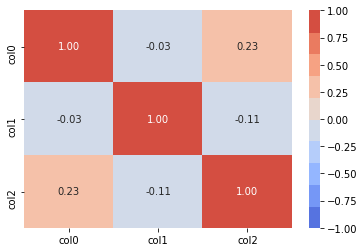

# 自動補完設定
%config IPCompleter.greedy=True
変動係数
$$ 変動係数 C.V.=\frac{s}{\overline{X}} $$
異なる重量や単位を持つデータのバラツキ具合を比較できる様にする係数
from statistics import mean, median, variance, stdev
# import numpy as np
data = [60,80,90,40,70]
# data = np.array([100,200,300])
m = mean(data)
median = median(data)
# 偏差
def dev(n):
return n - m
deviation = list(map(dev, data))
# 分散
variance = variance(data)
# 標準偏差
stdev = stdev(data)
print('平均: {0:.2f}'.format(m))
print('中央値: {0:.2f}'.format(median))
print('偏差: ',deviation)
print('分散: {0:.2f}'.format(variance))
print('標準偏差: {0:.2f}'.format(stdev))
平均: 68.00
中央値: 70.00
偏差: [-8, 12, 22, -28, 2]
分散: 370.00
標準偏差: 19.24
標準偏差
標準偏差は金融ではリスクと同義。例えば「期待リターン5%、リスク10%」と言った場合は、
リターン分布が正規分布に従うと仮定し、将来リターンが68.3%の確率で-5%(=5-10) ～ +15％(=5+10)の間に収まる
ということを意味する。
相関係数
$$ r_{xy} = \frac{\displaystyle \sum_{i = 1}^n (x_i - \overline{x}) (y_i - \overline{y})}{\sqrt{\displaystyle \sum_{i = 1}^n (x_i - \overline{x})^2}\sqrt{\displaystyle \sum_{i = 1}^n (y_i - \overline{y})^2}} $$
import pandas as pd
import numpy as np
# テスト用のリストを作る
l1=list(np.random.randint(0, 10, 10))
l2=list(np.random.randint(0, 10, 10))
# 作ったlist
print(l1)
[4, 6, 0, 8, 6, 2, 0, 3, 3, 5]
print(l2)
[4, 6, 3, 7, 8, 4, 6, 9, 0, 0]
# リストをps.Seriesに変換
s1=pd.Series(l1)
s2=pd.Series(l2)
# pandasを使用してPearson's rを計算
res=s1.corr(s2) # numpy.float64 に格納される
# 結果
print(res)
[5, 4, 1, 2, 4, 7, 3, 2, 7, 2]
[4, 3, 1, 3, 5, 3, 7, 5, 2, 7]
-0.2368749156955745
import pandas as pd
import numpy as np
# テスト用のDataFrameを作る
df=pd.DataFrame(index=['idx'+str(i) for i in range(10)])
for i in range(3):
df['col'+str(i)]=np.random.rand(10)
# 作ったdata frame
print(df)
# pandasを使用してPearson's rを計算
res=df.corr() # pandasのDataFrameに格納される
# 結果
print(res)
# ヒートマップ
import seaborn as sns
sns.heatmap(df.corr(), cmap= sns.color_palette('coolwarm', 10), annot=True,fmt='.2f', vmin = -1, vmax = 1)
col0 col1 col2
idx0 0.284978 0.629326 0.095141
idx1 0.612321 0.684265 0.295009
idx2 0.755716 0.475218 0.778032
idx3 0.747498 0.978938 0.783364
idx4 0.957747 0.182957 0.142502
idx5 0.676027 0.123312 0.422607
idx6 0.226960 0.391368 0.252925
idx7 0.423927 0.119021 0.974749
idx8 0.740804 0.538159 0.978040
idx9 0.554380 0.868266 0.096229
col0 col1 col2
col0 1.000000 -0.028344 0.229137
col1 -0.028344 1.000000 -0.105724
col2 0.229137 -0.105724 1.000000
<matplotlib.axes._subplots.AxesSubplot at 0x2d70ee94248>
